ONCE UPON A TIME a girl named Cinderella lived with her stepmother and two stepsisters. Poor Cinderella had to work hard all day long so the others could rest. It was she who had to wake up each morning when it was still dark and cold to start the fire. It was she who cooked the meals. It was she who kept the fire going. The poor girl could not stay clean, from all the ashes and cinders by the fire.
“What a mess!” her two stepsisters laughed. And that is why they called her “Cinderella.”
One day, big news came to town. The King and Queen were going to have a ball! It was time for the Prince to find a bride. All of the young ladies in the land were invited to come. They were wild with joy! They would wear their most beautiful gown and fix their hair extra nice. Maybe the prince would like them! At Cinderella’s house, she now had extra work to do. She had to make two brand-new gowns for her step-sisters. “Faster!” shouted one step-sister. “You call that a dress?” screamed the other. “Oh, dear!” said Cinderella. “When can I–“ The stepmother marched into the room. “When can you WHAT?”
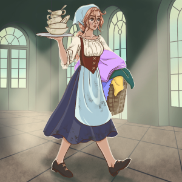“Well,” said the girl, “when will I have time to make my own dress for the ball?” “You?” yelled the stepmother. “Who said YOU were going to the ball?” “What a laugh!” said one step-sister. “Such a mess!” They pointed at Cinderella. All of them laughed. Cinderella said to herself, “When they look at me, maybe they see a mess. But I am not that way. And if I could, I WOULD go to the ball.” Soon the time came for the stepmother and step-sisters to leave for the big party.
Their fine carriage came to the door. The stepmother and step-sisters hopped inside. And they were off. “Good-bye!” called Cinderella. “Have a good time!” But her stepmother and step-sisters did not turn around to see her.
“Ah, me!” said Cinderella sadly. The carriage rode down the street. She said aloud, “I wish I could go to the ball, too!” Then - Poof!
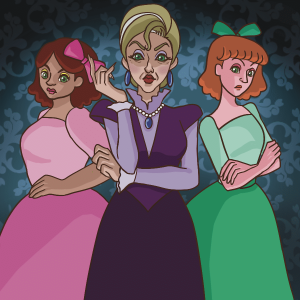All of a sudden, in front of her was a fairy. “You called?” said the fairy.
“Did I?” said Cinderella. “Who are you?” “Why, your Fairy Godmother, of course! I know your wish. And I have come to grant it.” “But…” said Cinderella, “my wish is impossible.” “Excuse me!” said the Fairy Godmother in a huff. “Did I not just show up out of thin air?” “Yes, you did,” said Cinderella. “Then let me be the one to say what is possible or not!” “Well, I think you know I want to go to the ball, too.” She looked down at her dirty clothes. “But look at me.” “You do look a bit of a mess, child,” said the Fairy Godmother. “Even if I had something nice to wear," said the girl, "I would have no way to get there." “Dear me, all of that is possible,” said the Fairy. With that, she tapped her wand on Cinderella’s head.
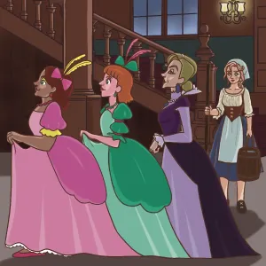At once, Cinderella was all clean. She was dressed in a beautiful blue gown. Her hair was set up high on her head inside a golden band. “This is wonderful!” said Cinderella.
“Who said I was done?” said the Fairy Godmother. She tapped her wand again. At once, a beautiful carriage came to be, with a driver and four white horses.
“Am I dreaming?” said Cinderella, looking around her. “It is as real, as real can be,” said the Fairy Godmother. “But there is one thing you must know.” “What is that?” “All of this lasts only to midnight. Tonight, at the stroke of midnight, it will all be over. Everything will go back to how it was before.” Ezoic “Then I must be sure to leave the ball before midnight!” said Cinderella. “Good idea,” said the Fairy Godmother. She stepped back. “My work is done.” And with that, the Fairy Godmother was gone. Cinderella looked around her. "Did that even happen?" But there she stood in a fine gown, and with a golden band in her hair. And there were her driver and four horses before her, waiting. “Coming?” called the driver. She stepped into the carriage. And they were off. Over at the ball, the Prince did not know what to think. “Why do you have that sad look on your face?” the Queen said to her son. “Look around you! You could not ask for finer maidens than these.” “I know, Mother,” said the Prince. Yet he knew something was wrong. He had met many of the young women. Yet after he said “hello,” one by one, he could find nothing more to say. "Look!" Someone pointed to the front door. “Who is that?” All heads turned. Who was that lovely maiden stepping down the stairs? She held her head tall and looked as if she belonged. But no one knew her.
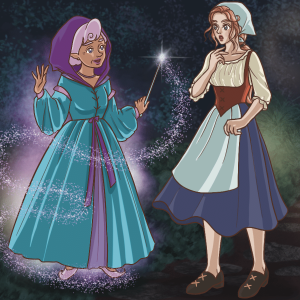“There is something about her,” said the Prince to himself. “I will ask her to dance.” And he walked over to Cinderella. “Have we met?” said the Prince. “I am pleased to meet you now,” said Cinderella with a bow. “I feel as if I know you,” said the Prince. “But of course, that is impossible.”
“Many things are possible,” said Cinderella, “if you wish them to be true.” The Prince felt a leap in his heart. He and Cinderella danced. When the song was over, they danced again. And then they danced again, and yet again. Soon the other maidens at the ball grew jealous. “Why is he dancing all the time with her?” they said. “How rude!”
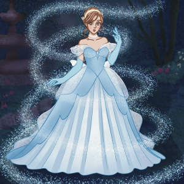But all the Prince could see was Cinderella. They laughed and talked, and they danced some more. In fact, they danced for so long that Cinderella did not see the clock. “Dong!” said the clock. Cinderella looked up. “Dong!” went the clock again. She looked up again. “Oh, my!” she cried out. “It is almost midnight!” “Dong!” rung the clock. “Why does that matter?” said the Prince.
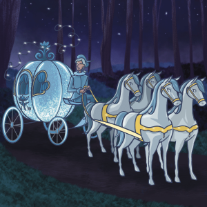“Dong!” called the clock. “I must go!” said Cinderella. “Dong!” went the clock. “But we just met!” said the Prince. “Why leave now?” “Dong!” rung the clock. “I must GO!” said Cinderella. She ran to the steps. “Dong!” said the clock. “I cannot hear you,” said the Prince. “The clock is too loud!” “Dong!” rung the clock. “Goodbye!” said Cinderella. Up, up the stairs she ran. “Dong!” went the clock. “Please, stop for a moment!” said the Prince. “Oh, dear!” she said as one glass slipper fell off her foot on the stair. But Cinderella kept running up. “Dong!” said the clock. “Please wait a moment!” said the Prince. “Dong!” rung the clock. “Goodbye!” Cinderella turned one last time. Then she rushed out the door. “Dong!” The clock was quiet. It was midnight. “Wait!” called the Prince. He picked up her glass slipper and rushed out the door.
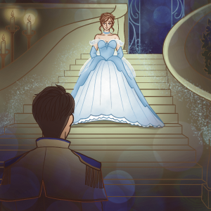He looked around but could not see her blue dress anywhere. “This is all I have left from her,” he said, looking down at the glass slipper. He saw that it was made in a special way, to fit a foot like none other. “Somewhere there is the other glass slipper,” he said. “And when I find it, I will find her, too. Then I will ask her to be my bride!” From hut to hut, from house to house, went the Prince. One young woman after another tried to fit her foot inside the glass slipper. But none could fit. And so the Prince moved on.
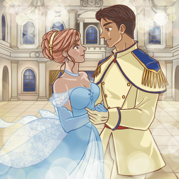At last the Prince came to Cinderella’s house. “He is coming!” called one step-sister as she looked out the window. “At the door!” screamed the other step-sister. “Quick!” yelled the stepmother. “Get ready! One of you must be the one to fit your foot in that slipper. No matter what!” The Prince knocked. The stepmother flew open the door. “Come in!” she said. “I have two lovely daughters for you to see.” The first step-sister tried to place her foot in the glass slipper.
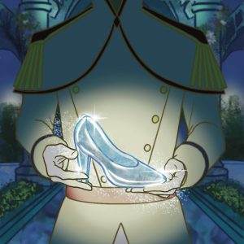She tried hard, but it just would not fit. Then the second step-sister tried to fit her foot inside. She tried and tried with all her might, too. But no dice. “Are there no other young women in the house?” said the Prince. “None,” said the stepmother. “Then I must go,” said the Prince. “Maybe there is one more,” said Cinderella, stepping into the room.
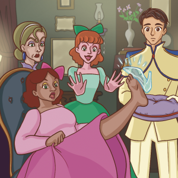“I thought you said there were no other young women here,” said the Prince. “None who matter!” said the stepmother in a hiss. “Come here,” said the Prince. Cinderella stepped up to him. The Prince got down on one knee and tried the glass slipper on her foot.
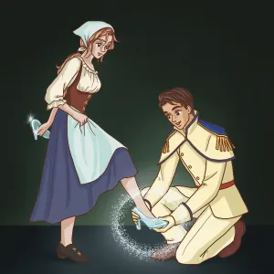It fit perfectly! Then, from her pocket Cinderella took out something. It was the other glass slipper! “I knew it!” he cried. “You are the one!” “WHAT?” shouted a step-sister. “Not HER!” screamed the other step-sister. “This cannot BE!” yelled the stepmother. But it was too late. The prince knew that Cinderella was the one. He looked into her eyes. He did not see the cinders in her hair or the ashes on her face. “I have found you!” he said. “And I have found you,” said Cinderella. And so Cinderella and the Prince were married, and they lived happily ever after.
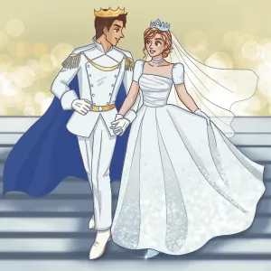